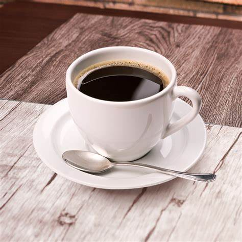
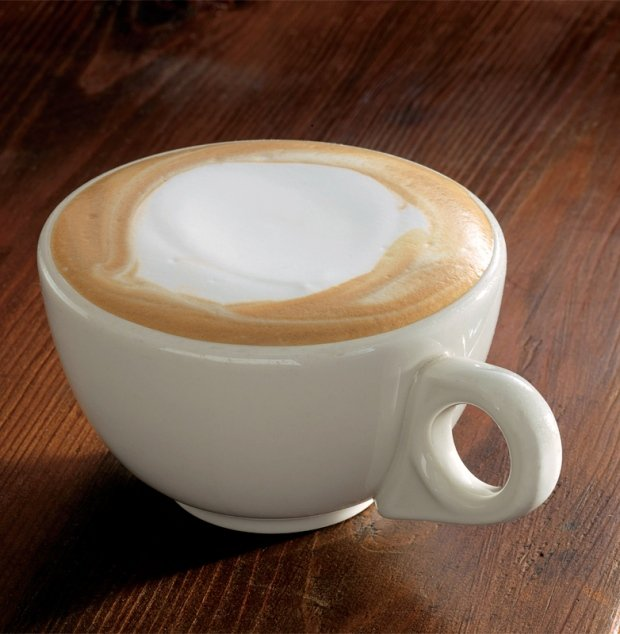
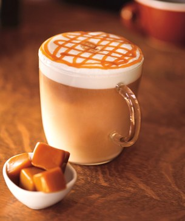

A true coffee lover knows well there are different types of coffee, and will learn how to differentiate them and choose their favorite one among all the options. The truth is there is coffee for pretty much all preferences, from very strong ones, to the sweet affogato.
| ESPRESSO | AMERICANO | LATTE | CAPPUCCINO | MOCHA | MACCHIATO |
|---|---|---|---|---|---|
 |
 |  |  |
 | |
| It is the foundation for most of the different types of coffee, it is the purest form and it certainly isn’t for everybody. The key for a good espresso is a good brewing process, it is served one shot of espresso in an espresso cup. | Simple in construction, the Americano consists of just water and espresso. The ratio of these ingredients is typically either 1/2 and 1/2 or 1/3 espresso (1-2 shots) and 2/3 water. Generally, chain shops will have more water than espresso because, unsurprisingly, many Americans still find raw espresso hard to palate. This is why over time the popularity of drinks like the latte or the cappuccino spiked in popularity. | It is served in a cup or a tumbler glass, with 1 shot of espresso, steamed milk and 1 cm micro-foam on top of the milk. The steamed milk gives the Latte a sweet flavor. | It is similar to the latte, the difference is that a Cappuccino has more foam (2-3 cm) on top, and chocolate sprinkle on top | It is one of the sweetest kinds among all different types of coffee. A Mocha consists in a shot of espresso mixed with a spoon of chocolate powder, on top you have to add steamed milk and 2-3 cm of foam, finally some sprinkles of chocolate powder. | Depending on where in the world you are, it might have different processes, but the traditional way to prepare a macchiato is with one shot of espresso and a dollop of steamed milk and foam on top of the espresso. |